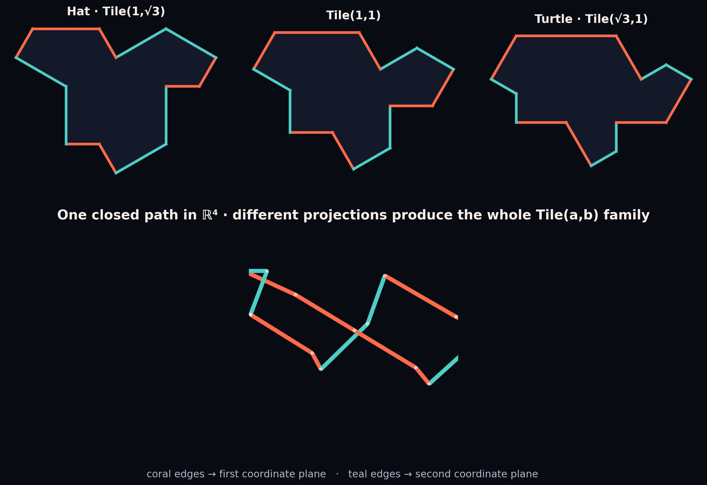

Four-dimensional lift
Nan Ma’s coherent ℝ⁴ edge lift, and how it differs from CAP/CASPr cut-and-project theory.
The observation
The whole Hat or Spectre tiling can be treated as a single static object in four-dimensional space. Arnaud Chéritat credits the initial idea to Nan Ma: not merely lifting one Tile(a,b) outline, but assigning coherent ℝ⁴ coordinates to every vertex in an entire simply connected tiling.[54] Ma’s earliest securely dated public artifact is the aperiodic-monotile-4d repository created 9 June 2023.

How the lift works
Write four-space as ℝ⁴ = ℝ²red × ℝ²green. Tile(a,b) has two direction classes: edges at multiples of 60° and edges at odd multiples of 30°. A directed edge (x,y) in the first class lifts to (x,y,0,0); one in the second lifts to (0,0,x,y). Opposite edges cancel by class, so the fourteen lifted vectors close into one polygonal path in ℝ⁴.
The ordinary two-dimensional tile is recovered by La,b(u,v) = a u + b v. Changing (a,b) changes the projection, not the lifted object: Hat, Tile(1,1), Turtle, Chevron, and Comet are views of the same four-dimensional edge path. Adjacent tiles give their shared edge the same lifted vector; integrating these vectors gives path-independent vertex coordinates across any simply connected patch.[54]
For homochiral Tile(1,1)/Spectre tilings, tiles rotated by an odd multiple of 30° swap the two edge classes. Animations vary an ℝ⁴→ℝ³ projection while the lifted surface stays still. This is why a complicated coordinated deformation can be understood as moving a camera around one higher-dimensional object.
What it proves — and what it does not
Ma’s construction is best understood as a discrete height function or stepped surface. The edge lift is canonical, but filling each lifted tile interior with a surface is not unique; rendered solids include a visualization choice. The lift does not by itself prove that Hat or Spectre control points form a regular model set.
That stronger result comes from distinct work. Baake, Gähler, and Sadun construct the self-similar CAP representative of the Hat family and a 4:2 cut-and-project scheme with two-dimensional internal space.[31] Baake, Gähler, Mazáč, and Sadun do the analogous job for Spectre via CASPr and five Rauzy-fractal windows, proving pure-point spectrum and diffraction.[32] These frameworks use algebraic return modules, Galois conjugation, and acceptance windows—not Ma’s edge coloring.
Six dimensions and diffraction
Socolar’s independent Golden Key construction embeds a related Hat metatiling in a six-dimensional hypercubic lattice and projects selected points to the plane, establishing golden-mean quasiperiodicity and a phason degree of freedom.[6] Exact diffraction calculations later use CAP and CASPr reprojections plus renormalization cocycles to compute Fourier–Bohr amplitudes through fractal windows.[35][36]
These are complementary views: Ma’s lift explains the moving Tile(a,b) family geometrically; CAP/CASPr explain long-range order dynamically; the six-dimensional Golden Key construction exposes a larger quasiperiodic embedding.
Explore it
- Chéritat and Ma’s full exposition
- Interactive 4D projection applet (CC BY-SA)
- Nan Ma’s Wolfram Language repository (no license; link only)
See also
Aperiodic monotile, Spectre tile, Substitution tiling
Categories: Mathematics · Visualizations